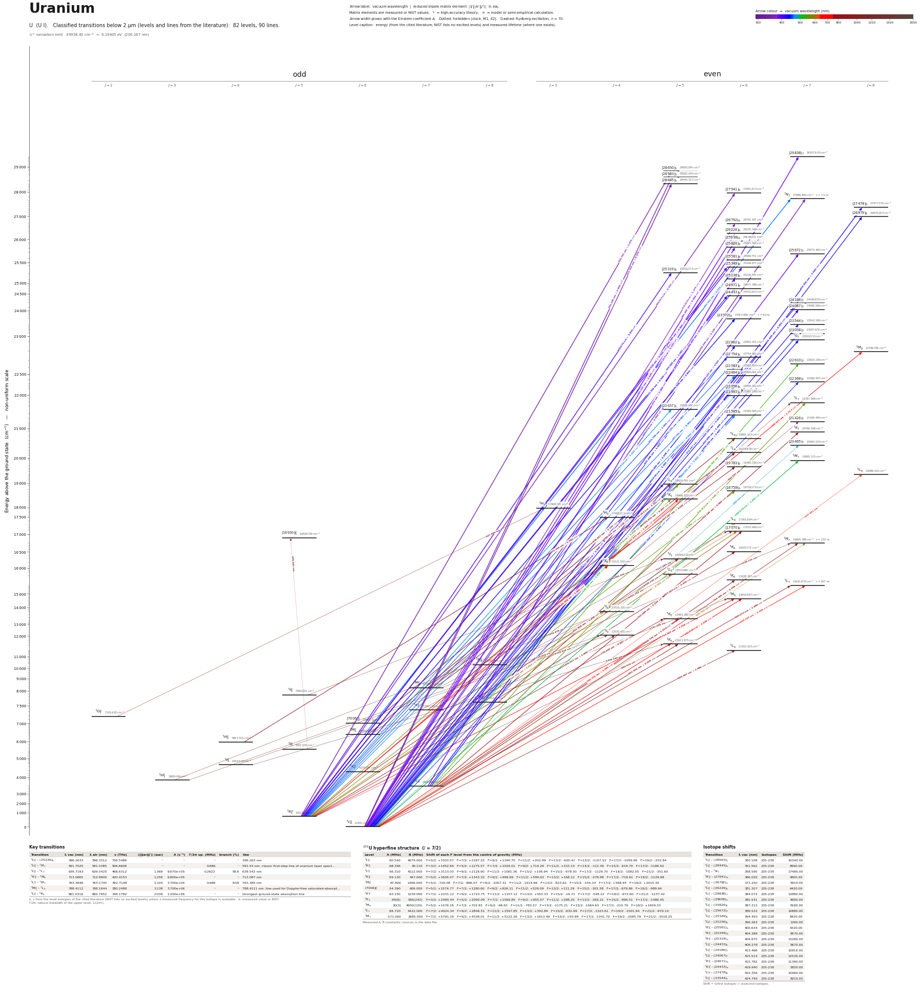

Uranium energy level diagram
Energy levels and transitions of neutral uranium (U I): 82 levels and 90 classified lines below 2 µm taken from the cited literature, each line with its vacuum wavelength and frequency and, for 69 of them, the reduced dipole matrix element. The NIST Atomic Spectra Database lists only the ground level and the ionisation limit of uranium, so the level energies on this page are those of the literature sources named below.
Hover a line or a level to isolate it, click to keep it selected. Scroll to zoom, drag to move.

Download: diagram (PDF) diagram (SVG) transitions (CSV) levels (CSV) source code

Key transitions of uranium
| Transition | λ vac (nm) | λ air (nm) | ν (THz) | |⟨J‖er‖J′⟩| (ea₀) | A (s⁻¹) | Γ/2π up. (MHz) | branch (%) | Use |
|---|---|---|---|---|---|---|---|---|
| 5L°6 – (25236)6 | 396.2633 | 396.1512 | 756.5486 | – | – | – | – | 396.263 nm |
| 5L°6 – 7M7 | 591.7025 | 591.5385 | 506.6608 | – | – | 0.686 | – | 591.54 nm: classic first-step line of uranium laser spect… |
| 5L°6 – 5L7 | 639.7193 | 639.5425 | 468.6312 | 1.369 | 9.670e+05 | 0.2622 | 58.6 | 639.542 nm |
| 5K°5 – 7M6 | 713.0865 | 712.8900 | 420.4153 | 1.258 | 6.800e+05 | – | – | 713.087 nm |
| 5L°7 – 7M7 | 763.3846 | 763.1745 | 392.7148 | 1.104 | 3.700e+05 | 0.686 | 8.58 | 763.385 nm |
| 7M°6 – 7L5 | 788.4112 | 788.1944 | 380.2488 | 3.138 | 3.700e+06 | – | – | 788.4111 nm: line used for Doppler-free saturated-absorpt… |
| 5L°6 – 5K5 | 861.0316 | 860.7952 | 348.1782 | 2.039 | 1.200e+06 | – | – | strongest ground-state absorption line |
λ, ν from the level energies of the cited literature (NIST lists no excited levels) unless a measured frequency for this isotope is available. A: measured value or NIST. Γ/2π: natural linewidth of the upper level, 1/(2πτ).
235U hyperfine structure (I = 7/2)
| Level | A (MHz) | B (MHz) | Shift of each F level from the centre of gravity (MHz) |
|---|---|---|---|
| 5L°6 | -60.540 | 4074.000 | F=5/2: +3103.57 F=7/2: +2197.25 F=9/2: +1190.70 F=11/2: +202.99 F=13/2: -620.41 F=15/2: -1107.53 F=17/2: -1059.96 F=19/2: -252.84 |
| 5K°5 | -68.346 | 40.110 | F=3/2: +1452.64 F=5/2: +1275.57 F=7/2: +1029.01 F=9/2: +714.29 F=11/2: +333.13 F=13/2: -112.36 F=15/2: -619.70 F=17/2: -1186.02 |
| 5L°7 | -56.310 | 4112.000 | F=7/2: +3113.03 F=9/2: +2118.90 F=11/2: +1081.36 F=13/2: +106.94 F=15/2: -678.50 F=17/2: -1129.70 F=19/2: -1082.05 F=21/2: -351.60 |
| 5K°6 | -59.130 | 447.000 | F=5/2: +1626.47 F=7/2: +1343.32 F=9/2: +996.69 F=11/2: +599.63 F=13/2: +168.12 F=15/2: -278.98 F=17/2: -719.91 F=19/2: -1129.98 |
| 7M°6 | 67.800 | 2366.000 | F=5/2: -720.08 F=7/2: -886.07 F=9/2: -1007.31 F=11/2: -1014.66 F=13/2: -823.62 F=15/2: -334.33 F=17/2: +568.45 F=19/2: +2015.30 |
| (7006)°6 | -54.390 | 609.000 | F=5/2: +1574.77 F=7/2: +1280.60 F=9/2: +926.11 F=11/2: +529.09 F=13/2: +111.29 F=15/2: -301.58 F=17/2: -679.86 F=19/2: -989.94 |
| 5K°7 | -63.150 | 1239.000 | F=7/2: +2231.12 F=9/2: +1723.75 F=11/2: +1157.12 F=13/2: +563.33 F=15/2: -19.71 F=17/2: -548.22 F=19/2: -972.60 F=21/2: -1237.42 |
| 5K5 | -99(6) | 956(242) | F=3/2: +2484.44 F=5/2: +2090.09 F=7/2: +1569.85 F=9/2: +955.57 F=11/2: +288.20 F=13/2: -382.21 F=15/2: -996.51 F=17/2: -1486.45 |
| 7M6 | 20(3) | 4950(120) | F=5/2: +1476.18 F=7/2: +702.83 F=9/2: -98.63 F=11/2: -783.57 F=13/2: -1175.21 F=15/2: -1064.63 F=17/2: -210.79 F=19/2: +1659.53 |
| 5L7 | -84.720 | 4422.000 | F=7/2: +4024.34 F=9/2: +2846.51 F=11/2: +1597.85 F=13/2: +392.89 F=15/2: -632.99 F=17/2: -1323.61 F=19/2: -1501.94 F=21/2: -970.14 |
| 7M7 | -171.000 | 2685.000 | F=7/2: +5791.19 F=9/2: +4538.01 F=11/2: +3122.26 F=13/2: +1613.49 F=15/2: +93.89 F=17/2: -1341.70 F=19/2: -2585.79 F=21/2: -3518.25 |
Measured A, B constants; sources in the data file.
Isotope shifts
| Transition | λ vac (nm) | Isotopes | Shift (MHz) |
|---|---|---|---|
| 5L°6 – (28563)5 | 350.108 | 235-238 | 10340.00 |
| 5L°6 – (28445)5 | 351.562 | 235-238 | 8990.00 |
| 5L°6 – 7N7 | 358.590 | 235-238 | 17480.00 |
| 5K°5 – (27941)6 | 366.020 | 235-238 | 4800.00 |
| 5L°6 – (26792)6 | 373.250 | 235-238 | 5910.00 |
| 5L°6 – (26226)6 | 381.307 | 235-238 | 6420.00 |
| 5L°7 – (29838)7 | 384.072 | 235-238 | 13880.00 |
| 5L°6 – (25938)6 | 385.531 | 235-238 | 8090.00 |
| 5L°6 – (25826)6 | 387.213 | 235-238 | 8180.00 |
| 5L°6 – (25672)7 | 389.522 | 235-238 | 10880.00 |
| 5L°6 – (25349)6 | 394.493 | 235-238 | 8420.00 |
| 5L°6 – (25236)6 | 396.263 | 235-238 | 1260.00 |
| 5K°5 – (25581)6 | 400.634 | 235-238 | 4320.00 |
| 5K°5 – (25349)6 | 404.389 | 235-238 | 8570.00 |
| 5K°5 – (25319)5 | 404.875 | 235-238 | 13280.00 |
| 5L°6 – (24433)6 | 409.278 | 235-238 | 5670.00 |
| 5L°6 – (24186)7 | 413.466 | 235-238 | 10910.00 |
| 5L°6 – (24067)7 | 415.514 | 235-238 | 12530.00 |
| 5K°5 – (24671)6 | 415.782 | 235-238 | 11390.00 |
| 5K°5 – (24433)6 | 419.940 | 235-238 | 5820.00 |
| 5L°7 – (27478)8 | 422.356 | 235-238 | 10460.00 |
| 5L°6 – (23544)7 | 424.745 | 235-238 | 8210.00 |
Shift = ν(first isotope) − ν(second isotope).
Listed U transitions below 2 µm
Reduced dipole matrix elements follow the convention A = ω³|d|²/(3πε₀ħc³(2J′+1)), with J′ the upper level. Tags show where a number comes from: measured, NIST compilation, high-accuracy theory, or a model calculation.
U energy levels
| Level | Energy (cm⁻¹) | J | Parity | Lifetime | gJ | Hyperfine A (MHz) | Hyperfine B (MHz) | Lifetime source | Hyperfine source |
|---|---|---|---|---|---|---|---|---|---|
| 5L°6 | 0.000 | 6 | odd | stable | 0.75 | -60.54 | 4074 | – | Avril, Ginibre, Petit, Z. Phys. D 29, 91 (1994), as tabulated (experimental column) in Sa… |
| 5K°5 | 620.323 | 5 | odd | – | 0.73 | -68.3457 | 40.11 | – | Childs, Poulsen, Goodman, high-precision measurement of the hyperfine structure of the 62… |
| 5L°7 | 3800.829 | 7 | odd | – | 0.925 | -56.31 | 4112 | – | Avril, Ginibre, Petit, Z. Phys. D 29, 91 (1994), as tabulated (experimental column) in Sa… |
| 5H°3 | 3868.486 | 3 | odd | – | 0.69 | – | – | – | – |
| 5K°6 | 4275.707 | 6 | odd | – | 0.92 | -59.13 | 447 | – | Avril, Ginibre, Petit, Z. Phys. D 29, 91 (1994), as tabulated (experimental column) in Sa… |
| 5I°4 | 4453.419 | 4 | odd | – | 0.68 | – | – | – | – |
| 3I°5 | 5762.079 | 5 | odd | – | 0.885 | – | – | – | – |
| 5H°4 | 5991.314 | 4 | odd | – | 0.835 | – | – | – | – |
| 7M°6 | 6249.029 | 6 | odd | – | 0.625 | 67.8 | 2366 | – | Avril, Ginibre, Petit, Z. Phys. D 29, 91 (1994), as tabulated (experimental column) in Sa… |
| (7006)°6 | 7005.532 | 6 | odd | – | 0.95 | -54.39 | 609 | – | Avril, Ginibre, Petit, Z. Phys. D 29, 91 (1994), as tabulated (experimental column) in Sa… |
| 5G°2 | 7191.682 | 2 | odd | – | 0.395 | – | – | – | – |
| 5K°7 | 7326.118 | 7 | odd | – | 1.02 | -63.15 | 1239 | – | Avril, Ginibre, Petit, Z. Phys. D 29, 91 (1994), as tabulated (experimental column) in Sa… |
| 5L°8 | 7645.645 | 8 | odd | – | 1.04 | – | – | – | – |
| 5I°5 | 7864.204 | 5 | odd | – | 0.94 | – | – | – | – |
| 7M°7 | 8118.632 | 7 | odd | – | 0.845 | – | – | – | – |
| 7M°8 | 10347.345 | 8 | odd | – | 1.03 | – | – | – | – |
| 5L6 | 11502.623 | 6 | even | – | 0.775 | – | – | – | – |
| 5K5 | 11613.975 | 5 | even | – | 0.74 | -98.59 | 955.5 | – | Wei, Savukov, Castro, 'Application of saturation absorption spectroscopy to study the hyp… |
| 5I4 | 12035.631 | 4 | even | – | 0.755 | – | – | – | – |
| 5K5 | 13463.392 | 5 | even | – | 0.675 | – | – | – | – |
| 5I4 | 13710.331 | 4 | even | – | 0.715 | – | – | – | – |
| 7M6 | 14643.867 | 6 | even | – | 0.675 | 20.1 | 4949.7 | – | Harilal, Murzyn, Phillips, Martin, 'Hyperfine structures and isotopic shifts of uranium t… |
| 5L7 | 15631.855 | 7 | even | 607 ns measured | 0.91 | -84.72 | 4422 | Hackel & Rushford, 'Lifetime, branching ratio, and absolute transition probability of the… | Avril, de Labachellerie, Viala, Petit, J. Less-Common Met. 122, 47 (1986), as tabulated (… |
| 5K6 | 15638.367 | 6 | even | – | 0.89 | – | – | – | – |
| 7L5 | 15720.680 | 5 | even | – | 0.655 | – | – | – | – |
| 7K4 | 16121.932 | 4 | even | – | 0.62 | – | – | – | – |
| 5I5 | 16294.016 | 5 | even | – | 0.96 | – | – | – | – |
| 5K6 | 16505.772 | 6 | even | – | 0.905 | – | – | – | – |
| 7M7 | 16900.386 | 7 | even | 232 ns measured | 0.875 | -171 | 2685 | Carlson, Johnson, Worden, May, Solarz, Paisner, Opt. Commun. 21, 116 (1977), as quoted in… | Hackel, Bender, Johnson, Rushford, J. Opt. Soc. Am. 69, 230 (1979), as tabulated (experim… |
| (16930)°5 | 16929.759 | 5 | odd | – | 0.845 | – | – | – | – |
| (17070)6 | 17070.468 | 6 | even | – | 0.89 | – | – | – | – |
| 7L6 | 17361.894 | 6 | even | – | 0.88 | – | – | – | – |
| 5H4 | 17468.212 | 4 | even | – | 0.805 | – | – | – | – |
| 5H3 | 17968.721 | 3 | even | – | 0.54 | – | – | – | – |
| 7K5 | 18406.522 | 5 | even | – | 0.83 | – | – | – | – |
| (18759)6 | 18759.178 | 6 | even | – | 0.915 | – | – | – | – |
| 7L5 | 18932.765 | 5 | even | – | 0.675 | – | – | – | – |
| 5L8 | 19489.041 | 8 | even | – | 1.03 | – | – | – | – |
| (19783)6 | 19783.336 | 6 | even | – | 0.95 | – | – | – | – |
| 5M7 | 19885.515 | 7 | even | – | 0.9 | – | – | – | – |
| 7L6 | 20218.830 | 6 | even | – | 0.82 | – | – | – | – |
| (20465)7 | 20464.524 | 7 | even | – | 0.98 | – | – | – | – |
| 5L6 | 20661.512 | 6 | even | – | 0.835 | – | – | – | – |
| 5K7 | 20766.506 | 7 | even | – | 1.025 | – | – | – | – |
| (21426)7 | 21426.484 | 7 | even | – | 1.03 | – | – | – | – |
| (21585)6 | 21584.695 | 6 | even | – | 0.91 | – | – | – | – |
| (21637)5 | 21636.957 | 5 | even | – | 0.86 | – | – | – | – |
| 5L7 | 21767.969 | 7 | even | – | – | – | – | – | – |
| (21993)6 | 21993.148 | 6 | even | – | 1.115 | – | – | – | – |
| (22056)6 | 22056.302 | 6 | even | – | 0.95 | – | – | – | – |
| (22368)7 | 22368.467 | 7 | even | – | 1.03 | – | – | – | – |
| (22464)6 | 22464.293 | 6 | even | – | 0.99 | – | – | – | – |
| (22583)6 | 22582.654 | 6 | even | – | 0.955 | – | – | – | – |
| (22633)7 | 22633.158 | 7 | even | – | 1.03 | – | – | – | – |
| (22754)6 | 22754.061 | 6 | even | – | 0.945 | – | – | – | – |
| 5M8 | 22789.786 | 8 | even | – | 1.04 | – | – | – | – |
| (22862)6 | 22862.451 | 6 | even | – | 0.96 | – | – | – | – |
| 5L7 | 22918.553 | 7 | even | – | 0.965 | – | – | – | – |
| (23058)7 | 23057.676 | 7 | even | – | 1 | – | – | – | – |
| (23544)7 | 23543.508 | 7 | even | – | 1.03 | – | – | – | – |
| (23572)6 | 23572.086 | 6 | even | 60 ns measured | 0.945 | – | – | Janes et al. (unpublished, 1975) as quoted in Corliss, 'Line strengths and lifetimes of l… | – |
| (24067)7 | 24066.566 | 7 | even | – | 1.01 | – | – | – | – |
| (24186)7 | 24185.803 | 7 | even | – | 0.98 | – | – | – | – |
| (24433)6 | 24433.260 | 6 | even | – | 1.05 | – | – | – | – |
| (24671)6 | 24671.388 | 6 | even | – | 0.955 | – | – | – | – |
| (25236)6 | 25235.745 | 6 | even | – | 1.03 | – | – | – | – |
| (25319)5 | 25319.274 | 5 | even | – | 0.865 | – | – | – | – |
| (25349)6 | 25348.977 | 6 | even | – | 0.955 | – | – | – | – |
| (25581)6 | 25580.751 | 6 | even | – | 1.03 | – | – | – | – |
| (25672)7 | 25672.465 | 7 | even | – | 0.955 | – | – | – | – |
| (25826)6 | 25825.565 | 6 | even | – | 0.99 | – | – | – | – |
| (25938)6 | 25938.232 | 6 | even | – | 1 | – | – | – | – |
| (26226)6 | 26225.569 | 6 | even | – | 1.02 | – | – | – | – |
| (26792)6 | 26791.657 | 6 | even | – | 0.965 | – | – | – | – |
| (26979)8 | 26979.283 | 8 | even | – | 1.075 | – | – | – | – |
| (27478)8 | 27477.555 | 8 | even | – | 1.025 | – | – | – | – |
| 7N7 | 27886.995 | 7 | even | 7.3 ns measured | 0.85 | – | – | Klose (1975) as quoted in Corliss, 'Line strengths and lifetimes of levels in neutral ura… | – |
| (27941)6 | 27941.253 | 6 | even | – | 0.96 | – | – | – | – |
| (28445)5 | 28444.517 | 5 | even | – | 0.985 | – | – | – | – |
| (28563)5 | 28562.634 | 5 | even | – | 1.09 | – | – | – | – |
| (28650)5 | 28650.294 | 5 | even | – | 0.86 | – | – | – | – |
| (29838)7 | 29837.643 | 7 | even | – | 1.04 | – | – | – | – |
U⁺ ionisation limit 49958.40 cm⁻¹ = 6.19405 eV (200.167 nm)
Sources
- Avril, Ginibre, Petit, Z. Phys. D 29, 91 (1994), as tabulated (experimental column) in Sa…
- Avril, de Labachellerie, Viala, Petit, J. Less-Common Met. 122, 47 (1986), as tabulated (…
- Blaise & Wyart, 'Selected Constants: Energy Levels and Atomic Spectra of Actinides' (Tabl…
- Blaise & Wyart, 'Selected Constants: Energy Levels and Atomic Spectra of Actinides' (Tabl…
- Carlson, Johnson, Worden, May, Solarz, Paisner, Opt. Commun. 21, 116 (1977), as quoted in…
- Childs, Poulsen, Goodman, high-precision measurement of the hyperfine structure of the 62…
- Corliss, 'Line strengths and lifetimes of levels in neutral uranium', J. Res. Natl. Bur. …
- Corliss, 'Line strengths and lifetimes of levels in neutral uranium', J. Res. Natl. Bur. …
- Corliss, 'Line strengths and lifetimes of levels in neutral uranium', J. Res. Natl. Bur. …
- Corliss, 'Line strengths and lifetimes of levels in neutral uranium', J. Res. Natl. Bur. …
- Corliss, 'Line strengths and lifetimes of levels in neutral uranium', J. Res. Natl. Bur. …
- Corliss, 'Line strengths and lifetimes of levels in neutral uranium', J. Res. Natl. Bur. …
- Corliss, 'Line strengths and lifetimes of levels in neutral uranium', J. Res. Natl. Bur. …
- Corliss, 'Line strengths and lifetimes of levels in neutral uranium', J. Res. Natl. Bur. …
- Corliss, 'Line strengths and lifetimes of levels in neutral uranium', J. Res. Natl. Bur. …
- Corliss, 'Line strengths and lifetimes of levels in neutral uranium', J. Res. Natl. Bur. …
- Corliss, 'Line strengths and lifetimes of levels in neutral uranium', J. Res. Natl. Bur. …
- Corliss, 'Line strengths and lifetimes of levels in neutral uranium', J. Res. Natl. Bur. …
- Corliss, 'Line strengths and lifetimes of levels in neutral uranium', J. Res. Natl. Bur. …
- Corliss, 'Line strengths and lifetimes of levels in neutral uranium', J. Res. Natl. Bur. …
- Corliss, 'Line strengths and lifetimes of levels in neutral uranium', J. Res. Natl. Bur. …
- Corliss, 'Line strengths and lifetimes of levels in neutral uranium', J. Res. Natl. Bur. …
- Corliss, 'Line strengths and lifetimes of levels in neutral uranium', J. Res. Natl. Bur. …
- Corliss, 'Line strengths and lifetimes of levels in neutral uranium', J. Res. Natl. Bur. …
- Corliss, 'Line strengths and lifetimes of levels in neutral uranium', J. Res. Natl. Bur. …
- Corliss, 'Line strengths and lifetimes of levels in neutral uranium', J. Res. Natl. Bur. …
- Corliss, 'Line strengths and lifetimes of levels in neutral uranium', J. Res. Natl. Bur. …
- Corliss, 'Line strengths and lifetimes of levels in neutral uranium', J. Res. Natl. Bur. …
- Corliss, 'Line strengths and lifetimes of levels in neutral uranium', J. Res. Natl. Bur. …
- Corliss, 'Line strengths and lifetimes of levels in neutral uranium', J. Res. Natl. Bur. …
- Corliss, 'Line strengths and lifetimes of levels in neutral uranium', J. Res. Natl. Bur. …
- Corliss, 'Line strengths and lifetimes of levels in neutral uranium', J. Res. Natl. Bur. …
- Corliss, 'Line strengths and lifetimes of levels in neutral uranium', J. Res. Natl. Bur. …
- Corliss, 'Line strengths and lifetimes of levels in neutral uranium', J. Res. Natl. Bur. …
- Corliss, 'Line strengths and lifetimes of levels in neutral uranium', J. Res. Natl. Bur. …
- Corliss, 'Line strengths and lifetimes of levels in neutral uranium', J. Res. Natl. Bur. …
- Corliss, 'Line strengths and lifetimes of levels in neutral uranium', J. Res. Natl. Bur. …
- Corliss, 'Line strengths and lifetimes of levels in neutral uranium', J. Res. Natl. Bur. …
- Corliss, 'Line strengths and lifetimes of levels in neutral uranium', J. Res. Natl. Bur. …
- Corliss, 'Line strengths and lifetimes of levels in neutral uranium', J. Res. Natl. Bur. …
- Corliss, 'Line strengths and lifetimes of levels in neutral uranium', J. Res. Natl. Bur. …
- Corliss, 'Line strengths and lifetimes of levels in neutral uranium', J. Res. Natl. Bur. …
- Corliss, 'Line strengths and lifetimes of levels in neutral uranium', J. Res. Natl. Bur. …
- Corliss, 'Line strengths and lifetimes of levels in neutral uranium', J. Res. Natl. Bur. …
- Corliss, 'Line strengths and lifetimes of levels in neutral uranium', J. Res. Natl. Bur. …
- Corliss, 'Line strengths and lifetimes of levels in neutral uranium', J. Res. Natl. Bur. …
- Corliss, 'Line strengths and lifetimes of levels in neutral uranium', J. Res. Natl. Bur. …
- Corliss, 'Line strengths and lifetimes of levels in neutral uranium', J. Res. Natl. Bur. …
- Corliss, 'Line strengths and lifetimes of levels in neutral uranium', J. Res. Natl. Bur. …
- Corliss, 'Line strengths and lifetimes of levels in neutral uranium', J. Res. Natl. Bur. …
- Corliss, 'Line strengths and lifetimes of levels in neutral uranium', J. Res. Natl. Bur. …
- Corliss, 'Line strengths and lifetimes of levels in neutral uranium', J. Res. Natl. Bur. …
- Corliss, 'Line strengths and lifetimes of levels in neutral uranium', J. Res. Natl. Bur. …
- Corliss, 'Line strengths and lifetimes of levels in neutral uranium', J. Res. Natl. Bur. …
- Corliss, 'Line strengths and lifetimes of levels in neutral uranium', J. Res. Natl. Bur. …
- Corliss, 'Line strengths and lifetimes of levels in neutral uranium', J. Res. Natl. Bur. …
- Corliss, 'Line strengths and lifetimes of levels in neutral uranium', J. Res. Natl. Bur. …
- Corliss, 'Line strengths and lifetimes of levels in neutral uranium', J. Res. Natl. Bur. …
- Corliss, 'Line strengths and lifetimes of levels in neutral uranium', J. Res. Natl. Bur. …
- Corliss, 'Line strengths and lifetimes of levels in neutral uranium', J. Res. Natl. Bur. …
- Corliss, 'Line strengths and lifetimes of levels in neutral uranium', J. Res. Natl. Bur. …
- Corliss, 'Line strengths and lifetimes of levels in neutral uranium', J. Res. Natl. Bur. …
- Corliss, 'Line strengths and lifetimes of levels in neutral uranium', J. Res. Natl. Bur. …
- Corliss, 'Line strengths and lifetimes of levels in neutral uranium', J. Res. Natl. Bur. …
- Corliss, 'Line strengths and lifetimes of levels in neutral uranium', J. Res. Natl. Bur. …
- Corliss, 'Line strengths and lifetimes of levels in neutral uranium', J. Res. Natl. Bur. …
- Corliss, 'Line strengths and lifetimes of levels in neutral uranium', J. Res. Natl. Bur. …
- Corliss, 'Line strengths and lifetimes of levels in neutral uranium', J. Res. Natl. Bur. …
- Corliss, 'Line strengths and lifetimes of levels in neutral uranium', J. Res. Natl. Bur. …
- Corliss, 'Line strengths and lifetimes of levels in neutral uranium', J. Res. Natl. Bur. …
- Corliss, 'Line strengths and lifetimes of levels in neutral uranium', J. Res. Natl. Bur. …
- Corliss, 'Line strengths and lifetimes of levels in neutral uranium', J. Res. Natl. Bur. …
- Corliss, 'Line strengths and lifetimes of levels in neutral uranium', J. Res. Natl. Bur. …
- Corliss, 'Line strengths and lifetimes of levels in neutral uranium', J. Res. Natl. Bur. …
- Hackel & Rushford, 'Lifetime, branching ratio, and absolute transition probability of the…
- Hackel, Bender, Johnson, Rushford, J. Opt. Soc. Am. 69, 230 (1979), as tabulated (experim…
- Harilal, Murzyn, Phillips, Martin, 'Hyperfine structures and isotopic shifts of uranium t…
- Janes et al. (unpublished, 1975) as quoted in Corliss, 'Line strengths and lifetimes of l…
- Klose (1975) as quoted in Corliss, 'Line strengths and lifetimes of levels in neutral ura…
- Wei, Savukov, Castro, 'Application of saturation absorption spectroscopy to study the hyp…
Levels and classifications: archived online version (2017 captures of the level tables, 2002 capture of the wavelength table) of the Blaise & Wyart actinide tables (Laboratoire Aime Cotton); energies are for 238U and stated to be accurate to about 0.003 cm^-1. NIST ASD lists only the ground level and the limit 49958.4(5) cm^-1 (no newer measurement found, so no ionization_limit entry). Configurations are stored without parent terms (full printed string in each level note); terms printed in parentheses (leading component 25-50 %) are stored without parentheses. 'relative_intensity' is the hollow-cathode emission intensity printed in the selected-wavelength table (atlas scale) and only ranks lines. A_s values from Corliss 1976 are arc-intensity values of low accuracy (see each note); they were read from the scanned PDF by text extraction and accepted only if the printed gA, gf and log gf were mutually consistent and the wavelength matched a unique level pair. Isotope shifts are nu(235U) - nu(238U), derived from the tabulated level shifts (the 235U line lies at higher wavenumber when the value is positive). The selection is: the lines with a laser-spectroscopy use, the 48 strongest tabulated lines from the ground level and the 620 cm^-1 level, and the strongest lines from higher levels, all with upper level below about 30000 cm^-1.
Atoms with measured data
- Lithium-632 levels, 85 lines
- Lithium-732 levels, 85 lines
- Beryllium-917 levels, 26 lines
- Sodium-2336 levels, 106 lines
- Magnesium-2418 levels, 61 lines
- Magnesium-2518 levels, 61 lines
- Potassium-3934 levels, 84 lines
- Potassium-4034 levels, 84 lines
- Potassium-4134 levels, 84 lines
- Calcium-4035 levels, 61 lines
- Calcium-4335 levels, 61 lines
- Rubidium-8536 levels, 94 lines
- Rubidium-8736 levels, 94 lines
- Strontium-8740 levels, 70 lines
- Strontium-8840 levels, 70 lines
- Caesium-13331 levels, 79 lines
- Barium-13744 levels, 89 lines
- Barium-13844 levels, 89 lines
- Dysprosium-16339 levels, 55 lines
- Dysprosium-16439 levels, 55 lines
- Ytterbium-17118 levels, 26 lines
- Ytterbium-17418 levels, 26 lines